01 Introduction to the Brightspace Editor
The Brightspace Editor lets you create and insert content within Brightspace. It is integrated into every learning environment tool that has HTML content-creation capabilities, such as discussion topics, custom instructions for assignment folders, content topics, and more.
When you create or edit content files with the editor, there is a limit of 2.5 million characters per file.
02 Content view options
The Brightspace Editor offers three ways to view and work with your content:
| View option | Use |
|---|---|
| Design view |
Loads automatically when you open the editor. Use it to create and format content quickly, with no HTML
knowledge required. You can enter content, apply formatting, insert images and tables, and create links
using the available controls.
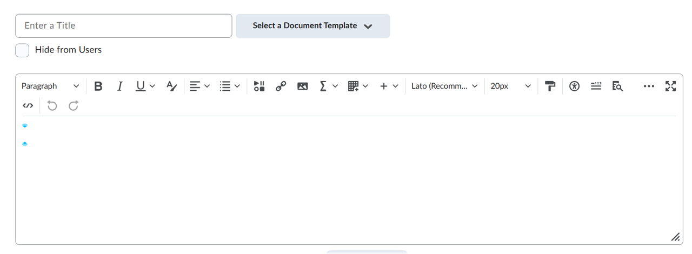 |
| Source Editor (HTML code) |
Accessed through the HTML Source Editor icon. It shows the HTML code that structures and formats the content.
It is ideal if you have HTML experience or want to apply styles from a cascading style sheet (CSS). You can
also copy and paste HTML code from another application here.
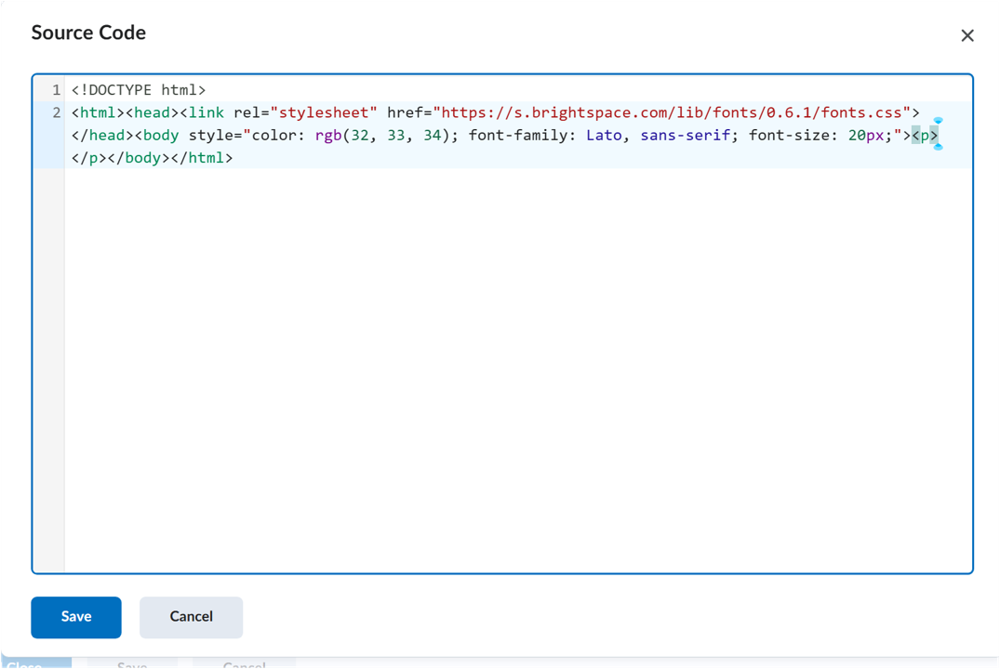 |
| Preview |
Shows how your content will appear to users once published, letting you confirm that it displays as expected
before saving your changes.
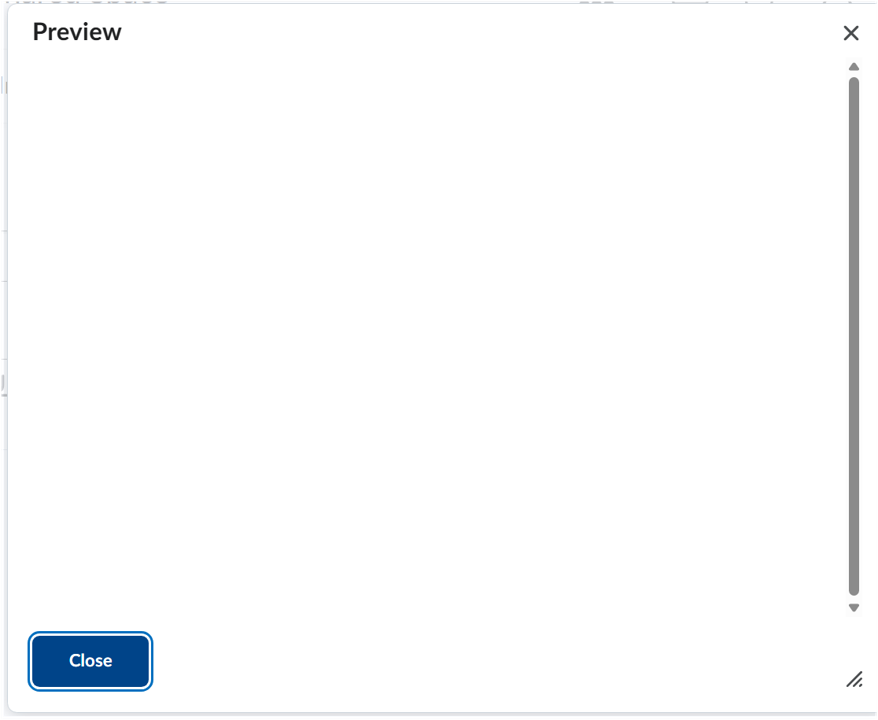 |
04 Math and chemistry equation editor
The Graphical Equation Editor, accessible through Other insert options, lets you add mathematical equations within the Brightspace Editor.
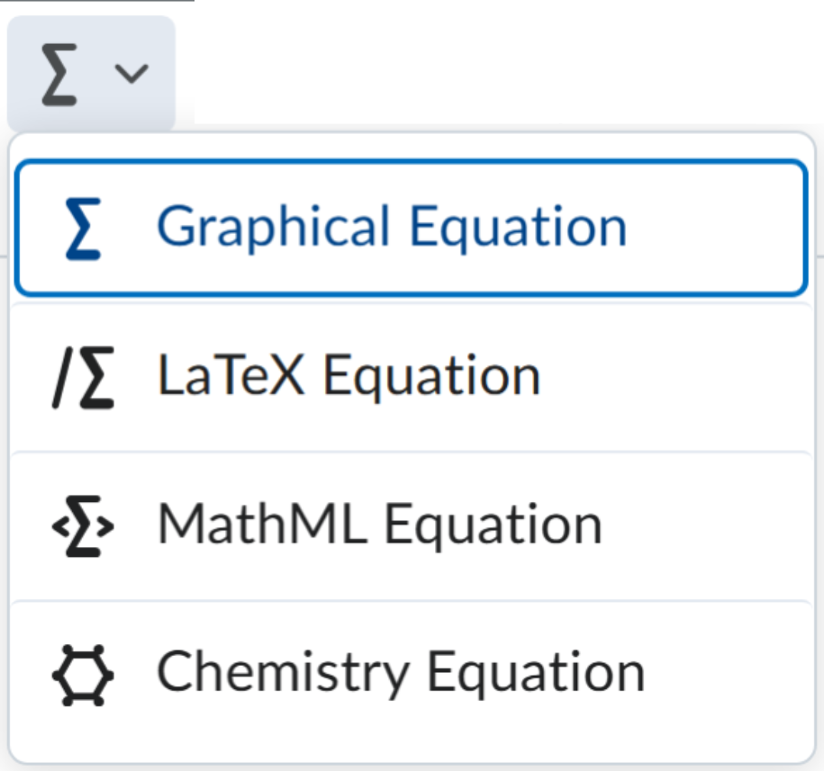
05 Supported formats
The editor supports the entry of four main types of equations:
-
MathML equation:
MathML is a W3C standard that uses XML to describe mathematical notation, capturing both its structure and its
content. This ensures correct display and access by assistive technologies.
Important note
Brightspace stores and displays all equations in MathML format, regardless of the format you use to enter them, and uses the MathJax JavaScript engine to render them.
-
LaTeX equation:
LaTeX is a TeX-based typesetting system that provides a text syntax for complex mathematical formulas. Brightspace
stores these equations as MathML to maintain consistency and accessibility.
Note
LaTeX is available in the new quizzing experience.
- Graphical equation: Offers 10 tabs of symbols and layouts for building mathematical equations.
- Chemistry equation: Offers specialized symbols for inorganic chemistry formulas.
06 Tabs in the graphical equation editor
The Graphical equation option offers ten tabs (or categories of elements):
| Tab | Icon | Description |
|---|---|---|
| Chemistry | 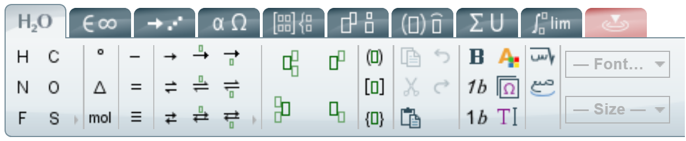 |
Adds specialized symbols for inorganic chemistry equations. Note: this tab only appears when you select the Chemistry equation option. |
| General | 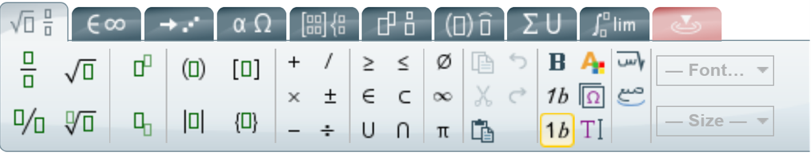 |
Provides a template for building equations. Lets you add and edit text using editing functions such as Cut, Copy, Paste, Undo, and Color. |
| Symbols | 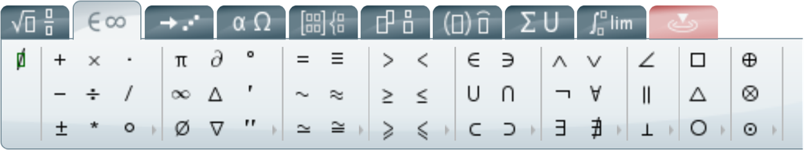 |
Adds mathematical symbols to equations. |
| Arrows | 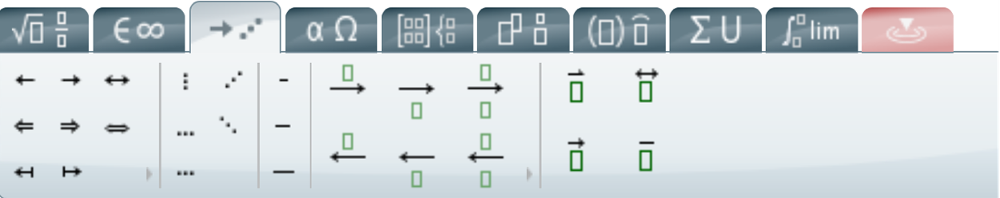 |
Updates or adds arrows to equations. |
| Greek and letters | 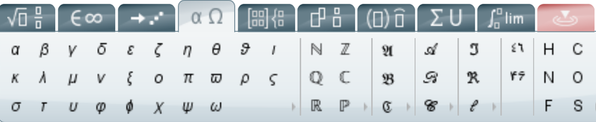 |
Updates or adds uppercase and lowercase Greek characters to equations. |
| Matrices | 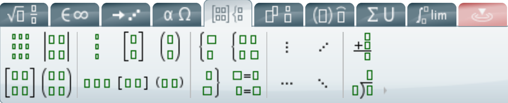 |
Updates or adds matrices to equations. |
| Scripts and layout | 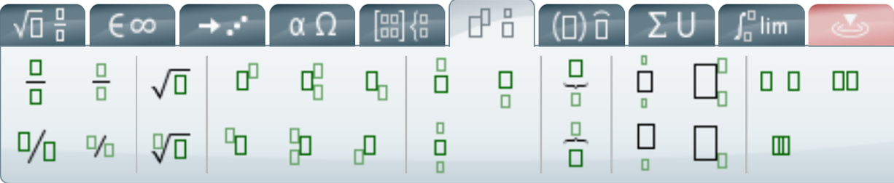 |
Adds scripts or layouts for building equations. |
| Decorations | 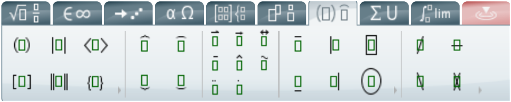 |
Adds fences, such as brackets and vertical bars, around text fields. |
| Big operators | 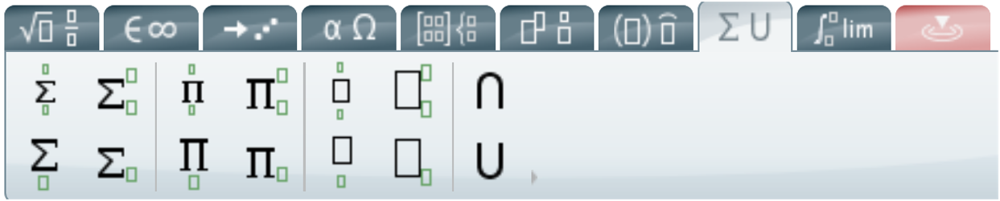 |
Updates or adds big operators to equations. |
| Calculus | 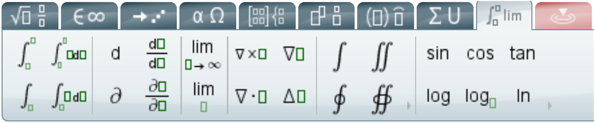 |
Provides a template for building calculus equations. |
07 Creating and editing equations
7.1 Create an equation (classic mode)
- Open the Brightspace Editor in the tool where you want to create an equation.
- From the Graphical equation drop-down list (the Σ icon), click the desired option: Graphical equation, Chemistry equation, MathML equation, or LaTeX equation.
- In the Insert Equation window, enter the formula using the keyboard and/or by selecting symbols from the tabs.
- Click Insert.
7.2 Edit an existing equation
- Navigate to the course element that contains the equation and click Edit HTML.
- Within the Brightspace Editor, click the box that contains the sigma icon.
- From the Graphical equation drop-down list, select the equation format you want to use for editing (Graphical, Chemistry, MathML, or LaTeX).
- Make the necessary changes.
- Click Insert > Update.